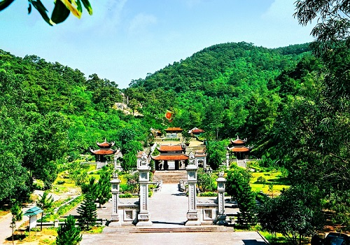
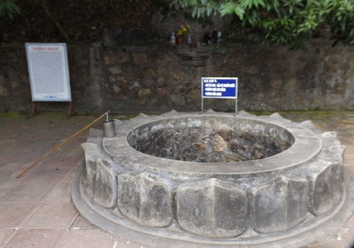
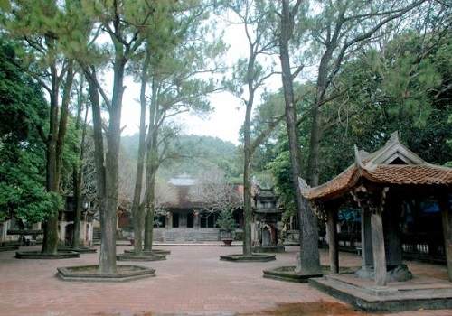
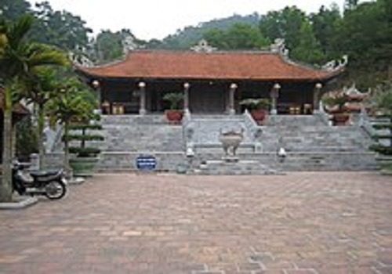

Côn Sơn
Năm 1384, Côn Sơn đã được Nguyễn Phi Khanh (thân sinh của Nguyễn Trãi) miêu tả như một cảnh thần tiên “Khói đầu non, ráng ngoài đảo, gấm vóc phô bày. Hoa dọc suối, cỏ ven rừng, biếc hồng phấp phới. Bóng mát để nghỉ, chỗ vắng để ngồi, mùi thơm để ngửi, sắc đẹp để xem. Phàm những hình ảnh trong mát, tiếng suối reo xa vời mà hư không, sâu thẳm mà yên lặng, hợp với tai mắt và tâm hồn con người ở đây đều có cả…”
Côn Sơn thuộc tỉnh Hải Dương là một danh thắng và di tích lịch sử đã in dấu trên sử sách
từ 7 thế kỷ trước. Đến nay, hàng trăm năm đã qua đi với biết bao biến cố,
Côn Sơn vẫn giữ được màu sắc thanh xuân, tươi mát, u tịch trong màu xanh kỳ diệu
của núi rừng và vẫn là điểm du lịch hàng năm thu hút hàng chục ngàn lượt khách đến tham quan,
chiêm ngưỡng… Núi Côn Sơn (dân gian thường gọi là núi Hun) cao gần 200m dài trên 1km
thuộc xã Cộng Hòa, huyện Chí Linh. Núi có hình con sư tử khổng lồ
sau những năm tháng viễn du đã chọn nơi đây làm điểm dừng chân vĩnh viễn


Suối Côn Sơn cũng là điểm dừng chân của không ít khách du lịch.
Dòng suối này rì rào chảy quanh năm suốt tháng.
Bên suối có hai tảng đá sỏi kết lớn tương đối bằng phẳng - gọi là Thạch Bàn
(còn gọi là hòn đá năm gian). Tương truyền Nguyễn Trãi thường ngồi đây ngắm cảnh,
làm thơ và suy tư việc nước.
Dưới chân núi Côn Sơn có một ngôi chùa cổ nằm trong một khuôn viên khá rộng,
gọi là chùa Côn Sơn (tục gọi là chùa Hun). Ngôi chùa này được khởi dựng vào cuối thế kỷ 13,
mở rộng năm 1329 và trùng tu, tôn tạo ở các thế kỷ 17, 18 và mấy chục năm gần đây.
Chùa hiện nay có kiến trúc kiểu chữ “Công”, còn ngói mũi hàn và
đá tảng hoa sen là di tích thời Trần. Trong chùa có những tượng Phật cỡ lớn,
cao tới 2 - 3m, 14 tấm bia đá dựng từ thời hậu Lê ở xung quanh chùa là những
văn bản ghi nhận các sự kiện quan trọng xảy ra trên mảnh đất này.


Đền thờ Nguyễn Trãi khởi công xây dựng ngày 14-12-2000,
trên khuôn viên đất rộng gần 10.000 mét vuông, tại chân núi Ngũ Nhạc,
nằm trong khu vực Thanh Hư Động và gần nơi ngày xưa từng có đền thờ
bà Trần Thị Thái, thân mẫu của Nguyễn Trãi. Phía bên phải là dòng
suối Côn Sơn chảy từ Bắc xuống Nam, uốn lượn từ phải qua trái, ôm lấy khu Đền.
Hồ Côn Sơn được tôn tạo từ năm 1998 với diện tích khoảng 43ha,
hồ được bao quanh bởi hệ thống đường dạo và cây cảnh.
Không chỉ làm nhiệm vụ cung cấp nguồn lợi thủy sản và nước để
phục vụ sản xuất nông nghiệp, hồ Côn Sơn còn là một điểm xuyết
tô thêm cho khung cảnh nơi đây vẻ đẹp nên thơ, ảo diệu và điệu
đà cho vùng đất Hải Dương xinh đẹp này!